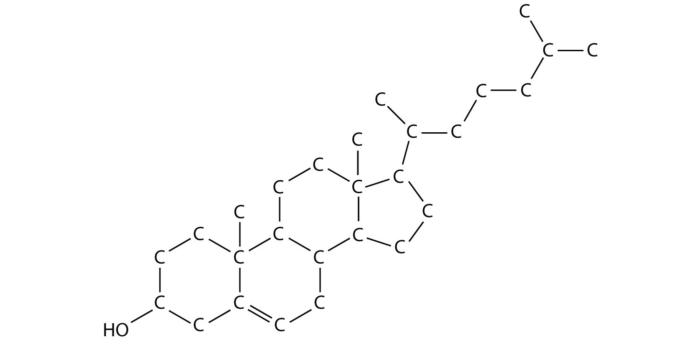

Cholesterol (C27H46O), a compound that is sometimes in the news, is a white, waxy solid produced in the liver of every animal, including humans. It is important for building cell membranes and in producing certain hormones (chemicals that regulate cellular activity in the body). As such, it is necessary for life, but why is cholesterol the object of attention?
Besides producing cholesterol, we also ingest some whenever we eat meat or other animal-based food products. People who eat such products in large quantities, or whose metabolisms are unable to handle excess amounts, may experience an unhealthy buildup of cholesterol in their blood. Deposits of cholesterol, called plaque, may form on blood vessel walls, eventually blocking the arteries and preventing the delivery of oxygen to body tissues. Heart attacks, strokes, and other circulatory problems can result.
Most medical professionals recommend diets that minimize the amount of ingested cholesterol as a way of preventing heart attacks and strokes. Tests are available to measure cholesterol in the blood, and there are several drugs capable of lowering cholesterol levels.
Figure 4.1 A Molecular Model of Cholesterol
Chapter 3 "Ionic Bonding and Simple Ionic Compounds" discussed ionic bonding, which results from the transfer of electrons among atoms or groups of atoms. In this chapter, we will consider another type of bonding—covalent bonding. We will examine how atoms share electrons to form these bonds, and we will begin to explore how the resulting compounds, such as cholesterol, are different from ionic compounds.